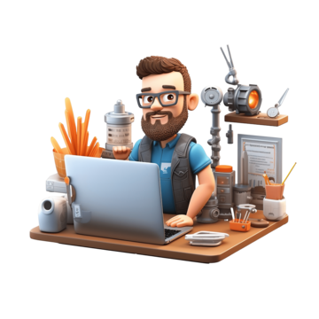

Critical Analysis
Reflection on Placement
In-depth reflection of my WIL placement experience, highlighting key learning outcomes.
Critical Analysis/Reflection: WIL Placement at Stegowl Technologies
Describe (D):
During my Work Integrated Learning (WIL) placement, I developed a furniture shop e-commerce website using PHP, Laravel, MySQL, and custom CSS alongside Bootstrap. My primary focus was ensuring the website was responsive for mobile devices while maintaining a user-friendly interface. I implemented functionalities for product listing, categorization, and order management, as well as creating an admin panel for the shop owner to easily manage products, including adding, editing, or deleting them.
During my Work Integrated Learning (WIL) placement, I developed a furniture shop e-commerce website using PHP, Laravel, MySQL, and custom CSS alongside Bootstrap. My primary focus was ensuring the website was responsive for mobile devices while maintaining a user-friendly interface. I implemented functionalities for product listing, categorization, and order management, as well as creating an admin panel for the shop owner to easily manage products, including adding, editing, or deleting them.
Interpret (I):
One of the significant challenges I faced was managing the admin panel, which was a central part of the project. The panel needed to provide complete control over products, categories, orders, and settings, while being user-friendly. Balancing simplicity with functionality was challenging, as I had to ensure smooth integration of all features. This required thorough testing and several iterations to improve the overall interface.
Another major challenge was time management. In addition to the e-commerce project, I was tasked with updating a basic website for another client and handling university assignments. Balancing these responsibilities and explaining code to senior developers while managing feedback was overwhelming. It taught me the importance of task prioritization and seeking help when necessary.
One of the significant challenges I faced was managing the admin panel, which was a central part of the project. The panel needed to provide complete control over products, categories, orders, and settings, while being user-friendly. Balancing simplicity with functionality was challenging, as I had to ensure smooth integration of all features. This required thorough testing and several iterations to improve the overall interface.
Another major challenge was time management. In addition to the e-commerce project, I was tasked with updating a basic website for another client and handling university assignments. Balancing these responsibilities and explaining code to senior developers while managing feedback was overwhelming. It taught me the importance of task prioritization and seeking help when necessary.
Evaluate (E):
My proficiency in Laravel, PHP, and Bootstrap allowed me to efficiently build a mobile-responsive e-commerce site. However, I realized that my approach to the admin panel could have been more efficient. Initially, I spent too much time perfecting individual features, which delayed the overall progress and caused me to miss early feedback from senior developers.
When managing multiple projects, I struggled with time management. My hesitancy to seek help or clarification on the smaller client website updates further stretched my time. As a result, I found it challenging to balance the company’s expectations, university work, and timely delivery of the e-commerce project.
My proficiency in Laravel, PHP, and Bootstrap allowed me to efficiently build a mobile-responsive e-commerce site. However, I realized that my approach to the admin panel could have been more efficient. Initially, I spent too much time perfecting individual features, which delayed the overall progress and caused me to miss early feedback from senior developers.
When managing multiple projects, I struggled with time management. My hesitancy to seek help or clarification on the smaller client website updates further stretched my time. As a result, I found it challenging to balance the company’s expectations, university work, and timely delivery of the e-commerce project.
Plan (P):
To improve admin panel design in future projects, I plan to enhance my understanding of user-centric backend systems by studying common design patterns for admin panels. I will also improve my time management by using tools like Trello or Jira to better prioritize tasks and allocate time effectively across multiple projects.
Additionally, I aim to strengthen my skills in responsive design and explore JavaScript frameworks like React, which will help me manage complex frontend functionalities more efficiently. In the future, I will seek feedback earlier in the process to avoid delays and foster smoother collaboration.
To improve admin panel design in future projects, I plan to enhance my understanding of user-centric backend systems by studying common design patterns for admin panels. I will also improve my time management by using tools like Trello or Jira to better prioritize tasks and allocate time effectively across multiple projects.
Additionally, I aim to strengthen my skills in responsive design and explore JavaScript frameworks like React, which will help me manage complex frontend functionalities more efficiently. In the future, I will seek feedback earlier in the process to avoid delays and foster smoother collaboration.
Conclusion:
This reflection has highlighted both my strengths in frontend development and areas where I can grow. Moving forward, I am committed to continuously improving my skills, expanding my knowledge of modern development frameworks, and enhancing my ability to work effectively in teams. These improvements will allow me to deliver more impactful and efficient solutions as a developer.
This reflection has highlighted both my strengths in frontend development and areas where I can grow. Moving forward, I am committed to continuously improving my skills, expanding my knowledge of modern development frameworks, and enhancing my ability to work effectively in teams. These improvements will allow me to deliver more impactful and efficient solutions as a developer.

Technical & Transferable Skills
Frontend & Backend
Detailed breakdown of technical and transferable skills developed during the placement.
Technical & Transferable Skills: WIL Placement at Stegowl Technologies
Artefact 1: Building a Furniture E-commerce Platform (Technical Skills
Development)
Context:
During my WIL placement at Stegowl Technologies, I was tasked with building a mobile-responsive furniture shop e-commerce platform. This project involved using PHP and the Laravel framework for backend development, along with MySQL for managing the product database. I also integrated custom CSS and Bootstrap to ensure the site was visually appealing and functional on both desktop and mobile devices. The admin panel needed to give the shop owner full control over the platform, allowing them to add, edit, and delete products, manage categories, and handle customer orders.
Action:
I applied my existing knowledge of web development technologies like PHP, CSS, and Bootstrap to create a fully functional e-commerce site. The biggest technical challenge I faced was building an admin panel that would allow non-technical users to easily manage the store's inventory. I had to integrate CRUD (Create, Read, Update, Delete) operations for products and categories and ensure that the owner could view and manage orders efficiently. This required implementing complex backend logic while maintaining a user-friendly interface.
Result:
The final product was a dynamic, mobile-responsive e-commerce website with an intuitive admin panel. The project enhanced my technical skills, particularly in backend development using Laravel and MySQL. I became more adept at creating user interfaces that allowed for easy interaction with the backend, which directly impacted the usability of the admin panel. This project also allowed me to refine my responsive design skills, ensuring that the site worked seamlessly across all device sizes.
Learning:
Through this experience, I deepened my understanding of Laravel and MySQL, particularly in handling database interactions and user authentication. I also improved my skills in creating responsive and user-friendly frontends using Bootstrap. The project highlighted the importance of considering the end-user experience in every aspect of development. This knowledge is directly relevant to my major in Software Development, as it reinforced core principles of backend development and full-stack web design that will be critical in my future career. I learned to anticipate the needs of non-technical users and design systems that simplify complex tasks.
Artefact 2: Time Management and Task Prioritization (Transferable Skills Development)
Context:
In addition to my primary project of developing the e-commerce platform, I was tasked with updating a basic website for another client at Stegowl Technologies. At the same time, I was balancing university assignments and seeking feedback from senior developers on the primary project. These competing demands made it clear that I needed to improve my time management and prioritization skills to avoid delays and ensure that all projects were delivered on time.
Action:
To manage the competing priorities, I adopted a more structured approach to my tasks. I began using a task management tool (Trello) to break down each project into smaller, manageable tasks. I allocated specific time slots to work on the e-commerce platform, client updates, and university work. Additionally, I made it a point to seek feedback early on in the process for both the client project and the e-commerce site, which allowed me to address any issues before they became major obstacles.
Result:
By using Trello to track my tasks and deadlines, I was able to meet project timelines and manage my workload more effectively. This improved my ability to focus on one task at a time, while still maintaining an overview of all my ongoing responsibilities. Seeking feedback early helped me avoid rework, particularly in the e-commerce project, where I had initially delayed asking for clarification. As a result, I was able to deliver both projects within the given time frames.
Learning:
This experience taught me the importance of prioritization and proactive communication in managing multiple projects. I now understand the value of breaking larger projects into smaller, manageable tasks and allocating time accordingly. These transferable skills—time management, task prioritization, and clear communication—will be invaluable in my future career, regardless of the technical context. They are directly applicable to the fast-paced nature of software development, where managing multiple projects and deadlines is often the norm. Moving forward, I will continue to refine these skills, ensuring that I can balance technical demands with organizational efficiency in my professional life.
Context:
During my WIL placement at Stegowl Technologies, I was tasked with building a mobile-responsive furniture shop e-commerce platform. This project involved using PHP and the Laravel framework for backend development, along with MySQL for managing the product database. I also integrated custom CSS and Bootstrap to ensure the site was visually appealing and functional on both desktop and mobile devices. The admin panel needed to give the shop owner full control over the platform, allowing them to add, edit, and delete products, manage categories, and handle customer orders.
Action:
I applied my existing knowledge of web development technologies like PHP, CSS, and Bootstrap to create a fully functional e-commerce site. The biggest technical challenge I faced was building an admin panel that would allow non-technical users to easily manage the store's inventory. I had to integrate CRUD (Create, Read, Update, Delete) operations for products and categories and ensure that the owner could view and manage orders efficiently. This required implementing complex backend logic while maintaining a user-friendly interface.
Result:
The final product was a dynamic, mobile-responsive e-commerce website with an intuitive admin panel. The project enhanced my technical skills, particularly in backend development using Laravel and MySQL. I became more adept at creating user interfaces that allowed for easy interaction with the backend, which directly impacted the usability of the admin panel. This project also allowed me to refine my responsive design skills, ensuring that the site worked seamlessly across all device sizes.
Learning:
Through this experience, I deepened my understanding of Laravel and MySQL, particularly in handling database interactions and user authentication. I also improved my skills in creating responsive and user-friendly frontends using Bootstrap. The project highlighted the importance of considering the end-user experience in every aspect of development. This knowledge is directly relevant to my major in Software Development, as it reinforced core principles of backend development and full-stack web design that will be critical in my future career. I learned to anticipate the needs of non-technical users and design systems that simplify complex tasks.
Artefact 2: Time Management and Task Prioritization (Transferable Skills Development)
Context:
In addition to my primary project of developing the e-commerce platform, I was tasked with updating a basic website for another client at Stegowl Technologies. At the same time, I was balancing university assignments and seeking feedback from senior developers on the primary project. These competing demands made it clear that I needed to improve my time management and prioritization skills to avoid delays and ensure that all projects were delivered on time.
Action:
To manage the competing priorities, I adopted a more structured approach to my tasks. I began using a task management tool (Trello) to break down each project into smaller, manageable tasks. I allocated specific time slots to work on the e-commerce platform, client updates, and university work. Additionally, I made it a point to seek feedback early on in the process for both the client project and the e-commerce site, which allowed me to address any issues before they became major obstacles.
Result:
By using Trello to track my tasks and deadlines, I was able to meet project timelines and manage my workload more effectively. This improved my ability to focus on one task at a time, while still maintaining an overview of all my ongoing responsibilities. Seeking feedback early helped me avoid rework, particularly in the e-commerce project, where I had initially delayed asking for clarification. As a result, I was able to deliver both projects within the given time frames.
Learning:
This experience taught me the importance of prioritization and proactive communication in managing multiple projects. I now understand the value of breaking larger projects into smaller, manageable tasks and allocating time accordingly. These transferable skills—time management, task prioritization, and clear communication—will be invaluable in my future career, regardless of the technical context. They are directly applicable to the fast-paced nature of software development, where managing multiple projects and deadlines is often the norm. Moving forward, I will continue to refine these skills, ensuring that I can balance technical demands with organizational efficiency in my professional life.

Ethical Conduct
Professional Accountability
Detailed reflection on ethical implications and professional accountability during my placement.
Ethical Conduct and Professional Accountability
Context (C):
During my placement at Stegowl Technologies, I encountered a situation that required careful consideration of ethical conduct, specifically around data privacy and security. While developing the eCommerce website, I was tasked with managing sensitive customer information, including names, addresses, and payment details collected through the checkout process. The responsibility to safeguard this information raised concerns about potential misuse or data breaches, emphasizing the importance of adhering to data privacy regulations such as GDPR.
During my placement at Stegowl Technologies, I encountered a situation that required careful consideration of ethical conduct, specifically around data privacy and security. While developing the eCommerce website, I was tasked with managing sensitive customer information, including names, addresses, and payment details collected through the checkout process. The responsibility to safeguard this information raised concerns about potential misuse or data breaches, emphasizing the importance of adhering to data privacy regulations such as GDPR.
Action (A):
Recognizing the potential risks, I collaborated with senior developers to implement secure data-handling practices. We used encryption for sensitive data such as payment details and implemented SSL certificates to protect user data during transmission. I also advocated for data minimization, ensuring only necessary information was collected and used. Additionally, during the testing phase, I realized that data anonymization had not been applied, and I worked with the team to ensure that personal data was anonymized to prevent exposure during testing.
Recognizing the potential risks, I collaborated with senior developers to implement secure data-handling practices. We used encryption for sensitive data such as payment details and implemented SSL certificates to protect user data during transmission. I also advocated for data minimization, ensuring only necessary information was collected and used. Additionally, during the testing phase, I realized that data anonymization had not been applied, and I worked with the team to ensure that personal data was anonymized to prevent exposure during testing.
Result (R):
My actions ensured that the eCommerce website complied with data privacy laws, protecting user information and preventing potential data breaches. The secure protocols we implemented helped build trust with customers and reinforced the company’s commitment to ethical data management. However, I identified an area for improvement: integrating stricter privacy and data security measures during earlier stages of the development process, particularly for testing environments.
My actions ensured that the eCommerce website complied with data privacy laws, protecting user information and preventing potential data breaches. The secure protocols we implemented helped build trust with customers and reinforced the company’s commitment to ethical data management. However, I identified an area for improvement: integrating stricter privacy and data security measures during earlier stages of the development process, particularly for testing environments.
Learning (L):
This experience reinforced the importance of ethical accountability in handling sensitive data within the ICT industry. I learned that adhering to privacy regulations is not just about compliance but about maintaining trust with users. Moving forward, I will prioritize proactive data security measures, ensuring that both development and testing phases adhere to strict privacy protocols. Additionally, I will continue to advocate for transparent communication with users about how their data is used, fostering a culture of responsibility within development teams.
This experience reinforced the importance of ethical accountability in handling sensitive data within the ICT industry. I learned that adhering to privacy regulations is not just about compliance but about maintaining trust with users. Moving forward, I will prioritize proactive data security measures, ensuring that both development and testing phases adhere to strict privacy protocols. Additionally, I will continue to advocate for transparent communication with users about how their data is used, fostering a culture of responsibility within development teams.

About Me
Personal Background
Hello, I'm Pranj Patel, a Software Developer Intern based in the Gold Coast, currently pursuing
my Bachelor of IT at Griffith University...
About Me
Hello, I'm Pranj Patel, a Software Developer Intern based in the Gold Coast, currently pursuing my Bachelor of IT at Griffith University with a major in Software Development. My academic journey has equipped me with a strong foundation in web development and frontend technologies, including HTML, CSS, JavaScript, and responsive design.
My recent Work Integrated Learning (WIL) placement at Stegowl Technologies played a pivotal role in shaping my career aspirations. During my placement, I worked on an eCommerce platform, where I developed user-friendly, mobile-responsive interfaces. This experience enhanced both my technical abilities and my understanding of user experience (UX) design, highlighting the importance of creating seamless, functional interfaces.
The hands-on experience at Stegowl has solidified my passion for UI/UX design and mobile application development. Moving forward, I aim to specialize in building innovative, user-centric solutions that push the boundaries of technology. My long-term goal is to contribute to the IT industry by developing applications that improve user engagement and provide practical solutions to real-world problems.
With a dedication to continuous learning and a collaborative mindset, I am excited about the future opportunities in software development and eager to make a positive impact through creative and efficient solutions.
Additional Experience
Leadership & Mentorship
A reflection on the leadership and mentorship experience that developed key industry skills.
Leadership and Mentorship Experience
Context (C):
During my time as a mentor in Griffith University's Peer Assisted Learning (PAL) program, I supported first-year IT students by offering guidance on course content and study strategies. This role required me to take on a leadership position and share my knowledge while fostering a collaborative learning environment.
During my time as a mentor in Griffith University's Peer Assisted Learning (PAL) program, I supported first-year IT students by offering guidance on course content and study strategies. This role required me to take on a leadership position and share my knowledge while fostering a collaborative learning environment.
Action (A):
I organized weekly group sessions, where I helped students with difficult topics like programming basics and web development. To ensure inclusivity and engagement, I employed various teaching methods such as interactive coding exercises and peer discussions. I also provided individual mentoring to those who needed extra help, tailoring my approach to meet their unique learning needs.
I organized weekly group sessions, where I helped students with difficult topics like programming basics and web development. To ensure inclusivity and engagement, I employed various teaching methods such as interactive coding exercises and peer discussions. I also provided individual mentoring to those who needed extra help, tailoring my approach to meet their unique learning needs.
Result (R):
Through this experience, I developed strong leadership, communication, and teamwork skills. The students I mentored reported improved confidence in their studies and better comprehension of difficult subjects. Additionally, I gained a deeper understanding of how to break down complex concepts and explain them in a simple, effective manner.
Through this experience, I developed strong leadership, communication, and teamwork skills. The students I mentored reported improved confidence in their studies and better comprehension of difficult subjects. Additionally, I gained a deeper understanding of how to break down complex concepts and explain them in a simple, effective manner.
Learning (L):
This experience reinforced the importance of clear communication and adaptability in a leadership role, skills which are vital in the IT industry. It also taught me how to foster a collaborative environment where everyone feels supported. These leadership and mentorship skills will be invaluable as I pursue a career in software development, where collaboration and guidance are essential for team success.
This experience reinforced the importance of clear communication and adaptability in a leadership role, skills which are vital in the IT industry. It also taught me how to foster a collaborative environment where everyone feels supported. These leadership and mentorship skills will be invaluable as I pursue a career in software development, where collaboration and guidance are essential for team success.